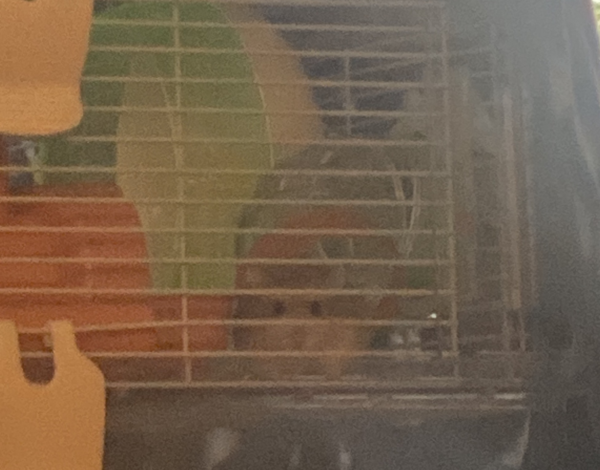

Few things that about him
Hamsters are usually more active during the night time but, Sauron likes to be different from all the others of
his
species so, usually, he wakes up every time he thinks there's food around.
He doesn't care what you're eating, cooking or if you're just getting his food.
He'll be there, in his cage staring at you until you give him some food or one of his treats.
